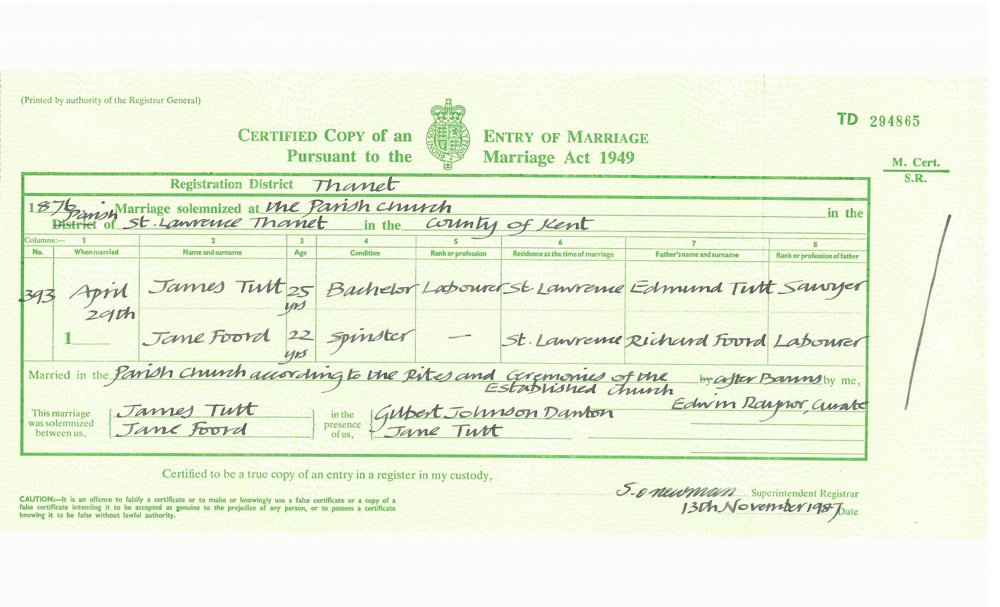
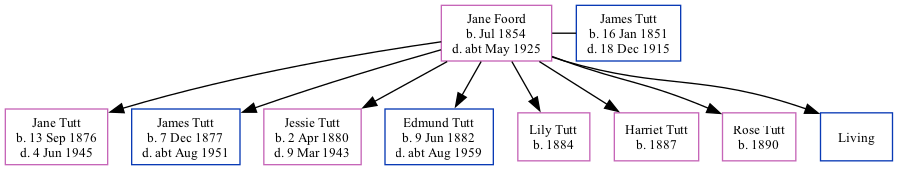

Jane Tutt (née Foord) 1854 - c1925
[ Home ] | [ Calendar ] | [ Surnames Index ] | [ Family History ]Jane Foord, the wife of James Tutt (the great-great-uncle of Nigel Horne), was born in Minster, Thanet, Kent, England in Jul 18541,2,3,4,5,6,7 and married James (a general laborer with whom she had 8 children: Jane Eliza Caroline, James Richard Edmund, Jessie Maria, Edmund Thomas, Lily, Harriet, Rose Elizabeth and Frank, along with 1 surviving child) at St Lawrence Parish Church, St Lawrence, Thanet, Kent, England on Apr 29, 18769 (KFHS CD 29).
Jane spent all of her life in Kent, England. Throughout her life, she lived in several places around the county: at her birthplace in 18611; at 18 Clarence Terrace, Ramsgate on Apr 3, 188110; at 10 Clarence Road, Ramsgate on Apr 5, 189111; St Lawrence in Thanet in 19014; and at Hillbrow Road, St Lawrence in Thanet on Mar 31, 190112 and on Apr 2, 191113.
She died c. May 1925 in Thanet8.
Children
- Jane Eliza Caroline was born on Sep 13, 1876
- James Richard Edmund was born on Dec 7, 1877
- Jessie Maria was born on Apr 2, 1880
- Edmund Thomas was born on Jun 9, 1882
- Lily was born in 1884
- Harriet was born in 1887
- Rose Elizabeth was born in 1890
Citations
- 1861 England Census Online publication - Provo, UT, USA: The Generations Network, Inc., 2005.Original data - Census Returns of England and Wales, 1861. Kew, Surrey, England: The National Archives of the UK (TNA): Public Record Office (PRO), 1861. Data imaged from the National
- 1881 England Census Online publication - Provo, UT, USA: The Generations Network, Inc., 2004. 1881 British Isles Census Index provided by The Church of Jesus Christ of Latter-day Saints © Copyright 1999 Intellectual Reserve, Inc. All rights reserved. All use is subject to the
- 1891 England Census Online publication - Provo, UT, USA: The Generations Network, Inc., 2005.Original data - Census Returns of England and Wales, 1891. Kew, Surrey, England: The National Archives of the UK (TNA): Public Record Office (PRO), 1891. Data imaged from The National
- 1901 England Census Online publication - Provo, UT, USA: The Generations Network, Inc., 2005.Original data - Census Returns of England and Wales, 1901. Kew, Surrey, England: The National Archives of the UK (TNA): Public Record Office (PRO), 1901. Data imaged from the National
- 1911 England Census Online publication - Provo, UT, USA: Ancestry.com Operations, Inc., 2011.Original data - Census Returns of England and Wales, 1911. Kew, Surrey, England: The National Archives of the UK (TNA), 1911. Data imaged from the National Archives, London, England.
- England & Wales, FreeBMD Birth Index, 1837-1915 Online publication - Provo, UT, USA: The Generations Network, Inc., 2006.Original data - General Register Office. England and Wales Civil Registration Indexes. London, England: General Register Office. © Crown copyright. Published by permission of the Cont
- Kent Marriages And Banns - Findmypast
- England & Wales deaths 1837-2007 - Findmypast
- 1911 England Census Online publication - Provo, UT, USA: Ancestry.com Operations, Inc., 2011.Original data - Census Returns of England and Wales, 1911. Kew, Surrey, England: The National Archives of the UK (TNA), 1911. Data imaged from the National Archives, London, England.
- 1881 England, Wales & Scotland Census - Findmypast (was age 27 and the wife of the head of the household)
- 1891 England, Wales & Scotland Census - Findmypast (was age 37 and the wife of the head of the household)
- 1901 England, Wales & Scotland Census - Findmypast (was age 48 and the wife of the head of the household)
- 1911 Census for England & Wales - Findmypast (was age 57 and the wife of the head of the household)
Media
James Tutt - Jane Foord - Marriage

England & Wales births 1837-2006 - BMD/B/1854/3/AH/001260/006
Kent, Canterbury Archdeaconry marriages - GBPRS/CANT/M/97021907/2
1911 Census for England & Wales - GBC/1911/RG14/04529/0585/2
England & Wales marriages 1837-2005 - BMD/M/1876/2/AZ/000098/001
England Marriages 1538-1973 - R_848394806/2
England & Wales Deaths 1837-2007 - BMD/D/1925/2/AZ/000918/063
Family Tree
Generated by ged2site. Last updated on Nov 13, 2024